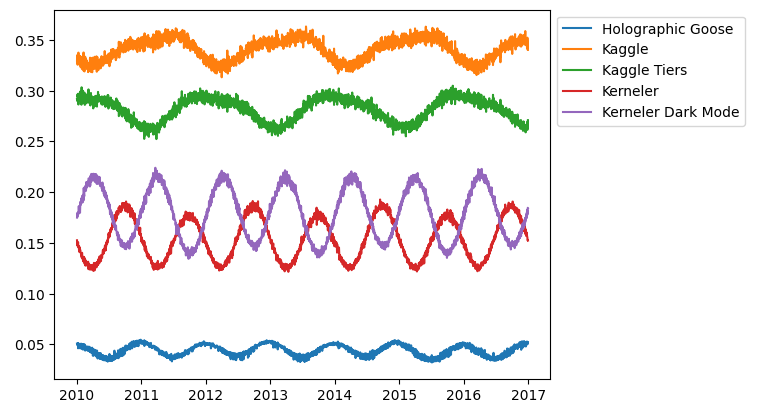
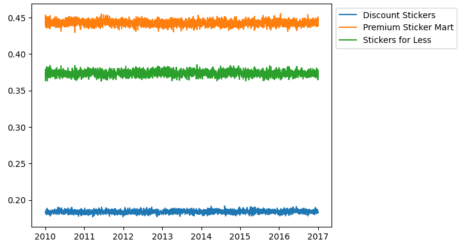
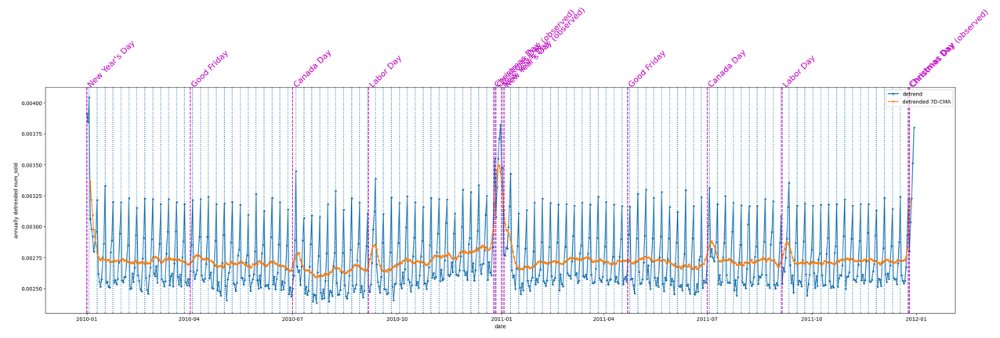
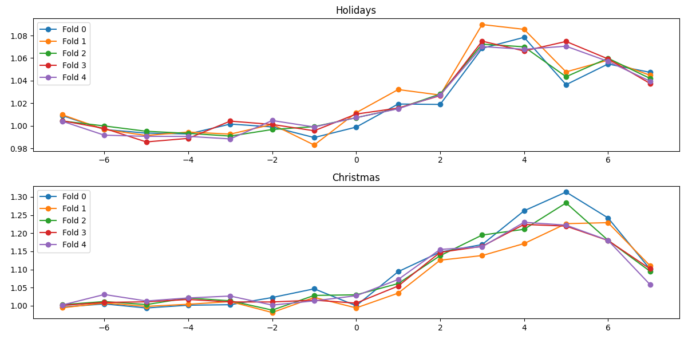
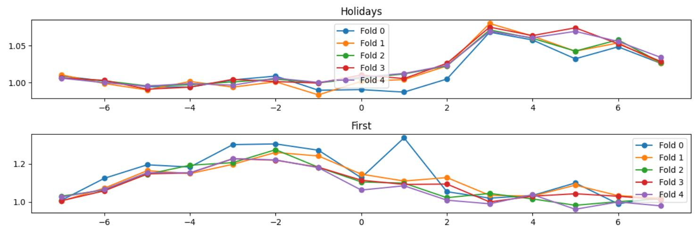
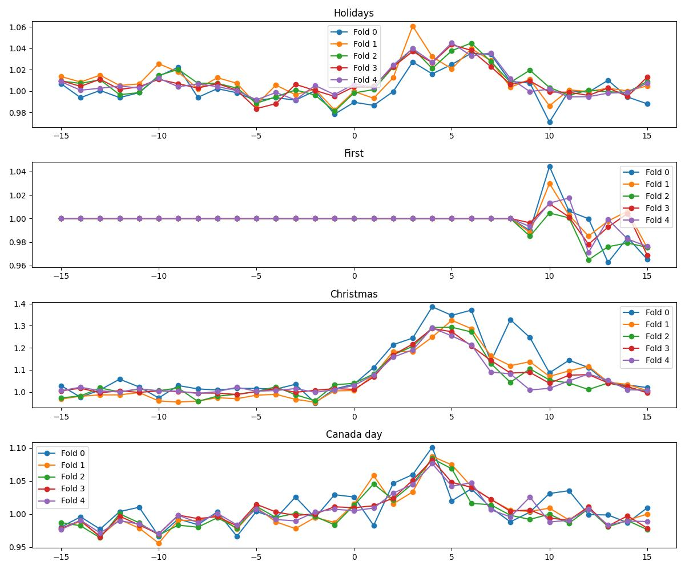
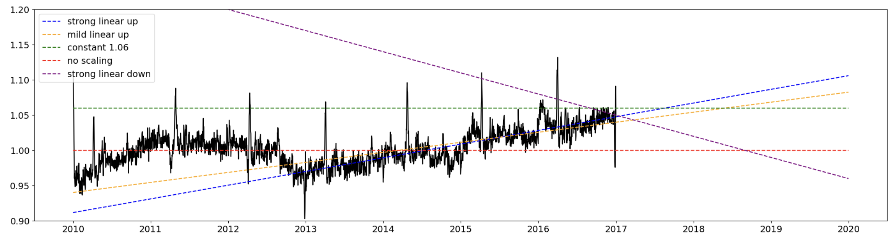
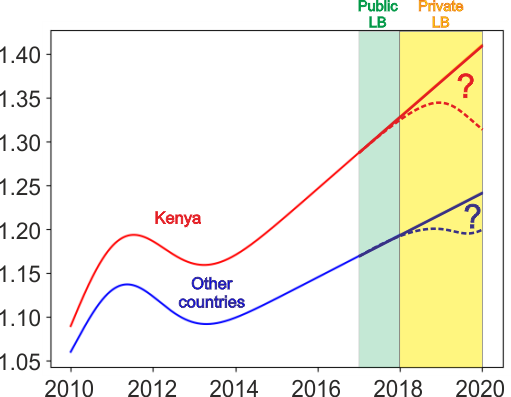

预测贴纸销量 | Kaggle — Forecasting Sticker Sales | Kaggle 是我参加最久的一次TPS（2025/04/01更新： 3月TPS是最久的一次了，排名18/4381，排名仍达不到拿swag的名次，但成为唯二的在shakeup中留存的top选手也算差强人意。不得不说第2的chiris是真的强），但成绩不够理想，只拿到了27/2722，其中一个原因是一直参考@Cabaxiom 的线性回归笔记本，但是其中年份product存在计算错误的问题。
数据介绍
共五列分为日期（天为单位）、country、store、product、num_sold(目标值)。
2010-2016是训练集
2017是测试集的公榜
2018-2019是测试集的私榜
之前也有个类似的比赛 ，可以说是之前的翻版，所以很多solution也是参考了过去的思路。
之前的第一名方案
乘性线性模型：
假期效应用高斯分布拟合。
EDA
@BROCCOLI BEEF指出，product具有周期性、store具有不变性、GDP和销售额具有较强相关性。


@Konstantin Dmitriev发现GDP在Kenya不符合，我和@BROCCOLI BEEF发现原因可能是因为$num_{sold}=a*GDP+bias$，而我们忽视了bias。
由上，我顺带分析了所有的514个世界银行特殊指标 ，其中GDP具有最高的R2，这也说明GDP已经足够了。
我发现，每周周日具有最多的销售额，且每周具有周期性。
@BROCCOLI BEEF指出了节假日效应：

并分析了节假日效应大概的持续时间：

我指出圣诞节和元旦的节假日效应可能会出现覆盖或影响的情况：


接下来，我将介绍前6的solutions（solution类似的则只叙述最高排名的solution）
其中“圣诞节和元旦的节假日效应可能会出现覆盖或影响的情况”这个性质，在前6名中，只被第一名所使用。也许这就是在高分者算法大致类似的情况下，第一名没有更多复杂的操作但能优于其他人的原因之一。
第一名 by George Koussa
类似第三名的乘性线性模型
闰年特征
正弦余弦特征
是否在节假日的十天内特征：
1 2 3 4 5 df['near_holiday' ] = 0 for country in df['country' ].unique():for day in holidays.CountryHoliday(country, years=df['year' ].unique())]for day in days:'date' ].dt.date < day + dt.timedelta(days=10 )) & (df['date' ].dt.date > day - dt.timedelta(days=10 )), 'near_holiday' ] = 1
gdp采用bias
1 df['gdp_factor' ] = (-17643.346899 +85.42355636 *df['gdp' ]) / 365
商店因子排除加拿大和肯尼亚进行考虑
通过ridge来预测未来因子：
1 2 3 4 5 6 7 8 9 10 df['ratio' ] = df['store_factor' ] * df['gdp_factor' ] * df['product_factor' ] * df['day_of_week_factor' ] * df['sincos_factor' ]'total' ] = df['num_sold' ] / df['ratio' ]0.1 ) 'trend_factor' ] = model.predict(df['n_day' ].to_numpy().reshape(-1 , 1 ))'date' ] < dt.datetime(2013 , 1 , 1 ), 'trend_factor' ] = 1 'ratio' ] = df['store_factor' ] * df['gdp_factor' ] * df['product_factor' ] * df['day_of_week_factor' ] * df['sincos_factor' ] * df['trend_factor' ]'total' ] = df['num_sold' ] / df['ratio' ]
新年因子：为新年设置一个节假日因子，以应对“圣诞节和元旦的节假日效应可能会出现覆盖或影响的情况”。
第二名 by Chris Deotte
后处理
对于未来，我们会抱有更好的态度。
所以Chris采用了两种策略，第一种是全乘以1.06，第二种是乘上1.06 + slope * (year - 2017)。

模型一
Transformer，大致代码为：
1 2 3 4 5 6 7 8 9 10 11 12 13 14 15 16 17 18 19 20 21 22 23 24 25 26 27 28 29 30 def build_model ():2 ))1440 ,feat_dim)for k in range (num_blocks):3 , 12 )3 , 12 )0.9 *x + 0.1 *skip 64 , activation='relu' )(x)32 ,activation='linear' , dtype='float32' )(x)1e-3 )compile (loss=loss, optimizer = opt)return model
另外：
在所有5个产品上训练1个模型（15个时期余弦调度）
添加30个布尔特征用于30个节假日
使用第一次预测（2017年，2018年）作为伪标签来训练第二次预测
使用第二次预测（2017年、2018年、2019年）作为伪标签来训练第三次预测
使用用不同种子训练的5个模型的中位数（用于第一次、第二次、第三次预测）
提交第三轮预测
事实上，我另外设计了一套大卷积核神经网络和类似FITS的傅里叶网络优于Chris的transformer模型，不过可惜没有像chris做那么多操作，使得最终分数并不是很好。
模型二
类似第三名的乘性线性模型
ensemble
通过在transformer上叠加线性回归来预测残差
第三名 by Konstantin Dmitriev
假期效应，同样使用高斯曲线来描述：
后处理

使用$trend(d)=1+s*ReLU(d-d1)$来描述，其中s和$d_1$是斜率和位移参数。
模型
乘性线性模型
引入了day-of-year的因子
使用scipy.optimize.minimize 来优化MAPE
给每个国家都训练一个模型，具体而言：
1 2 3 4 5 6 7 8 9 10 11 12 13 14 15 16 17 18 19 20 21 22 23 24 25 26 27 28 29 30 31 32 33 34 35 36 37 38 39 40 41 42 43 44 45 46 47 def optimization_pipeline2 (df_train, df_test, cols, countries_groups, initial_guess_struct, optimization_steps_config ):'prediction' ] = 0 'prediction' ] = 0 for countries_subset in countries_groups:if len (df2[df2.country.isin(countries_subset)]) == 0 :continue print (f'\tDo optimization on the countries: ' + ', ' .join(countries_subset))'prediction' ] = predict(res.x, df1[df1.country.isin(countries_subset)][cols].to_numpy(), True )'prediction' ] = predict(res.x, df2[df2.country.isin(countries_subset)][cols].to_numpy(), True )'x' : x_params_list} 'num_sold' ], df1['prediction' ])None if pd.isna(df2['num_sold' ]).any () else mean_absolute_percentage_error(df2['num_sold' ], df2['prediction' ])return res_final, (train_score_overall, test_score_overall)def predict2 (coef_list, df, cols, countries_groups, round =False ):'prediction' ] = 0.0 for x_params, countries_subset in zip (coef_list, countries_groups):'prediction' ] = predict(x_params, df1[df1.country.isin(countries_subset)][cols].to_numpy(), round )return df1['prediction' ]
第六名 by Pascal Terpstra
第一个模型是@kdmitrie 发布的公共笔记本的改编。第二个模型使用的是乘性线性回归模型，第三个模型是@cdeotte 发布的 transformer。